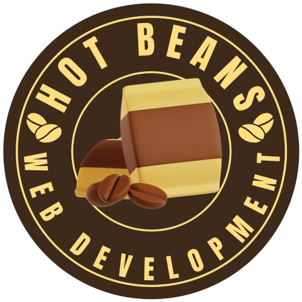
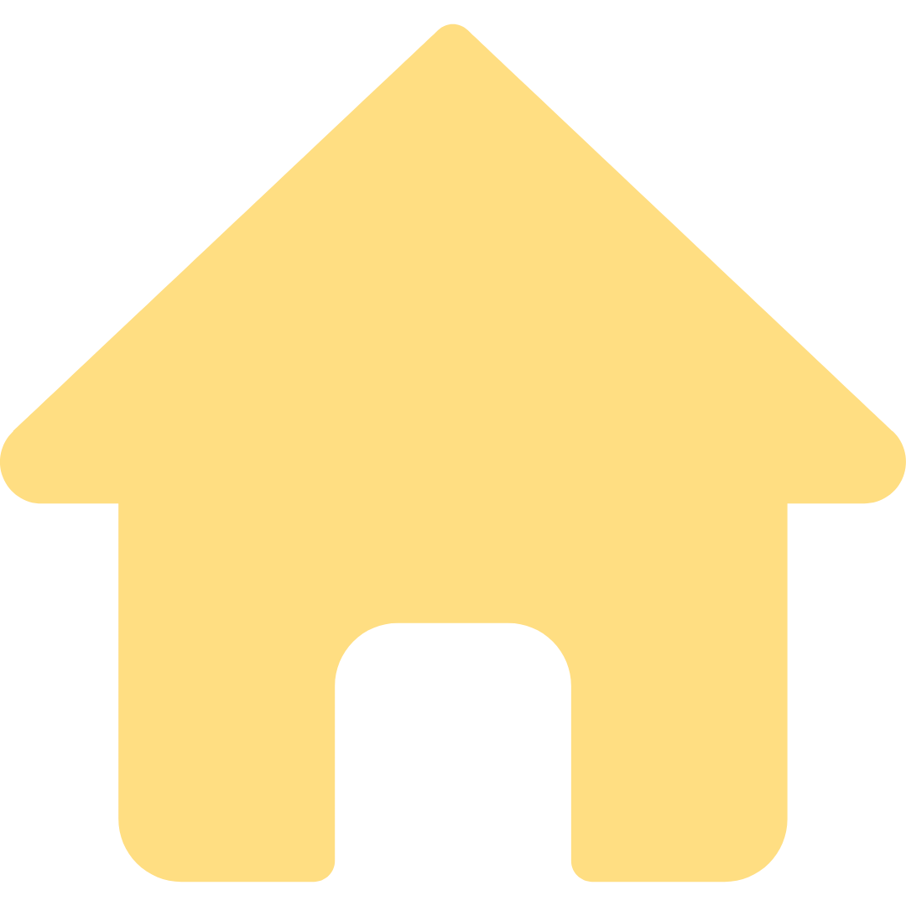
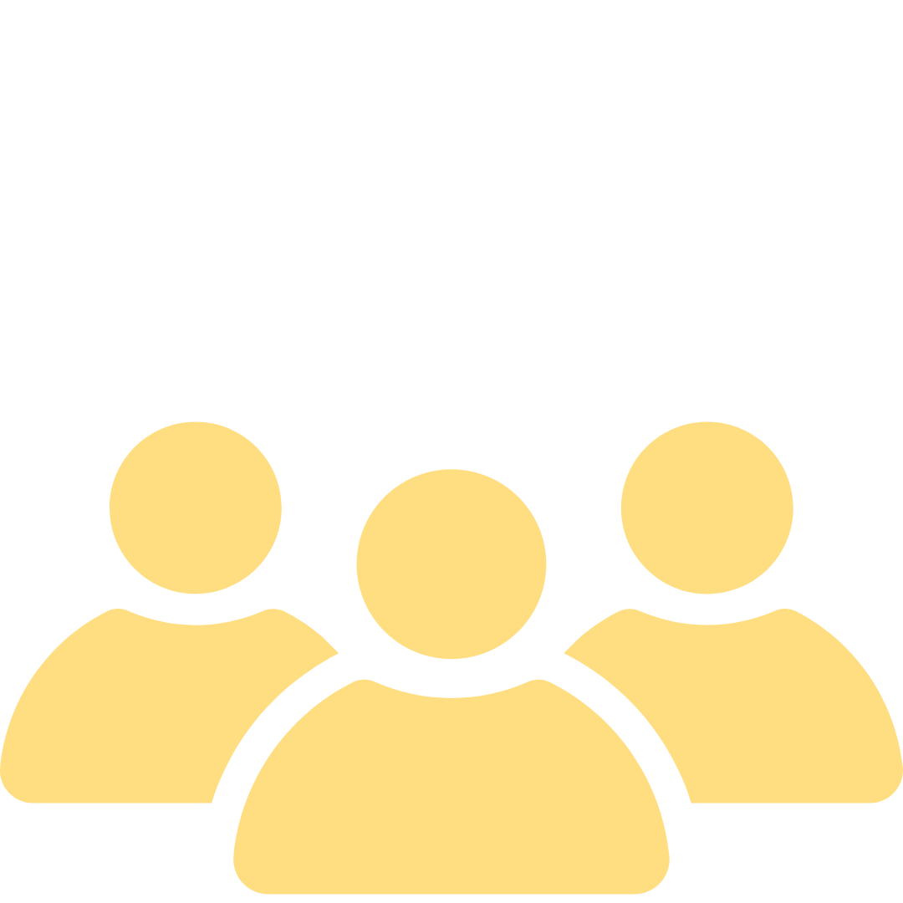
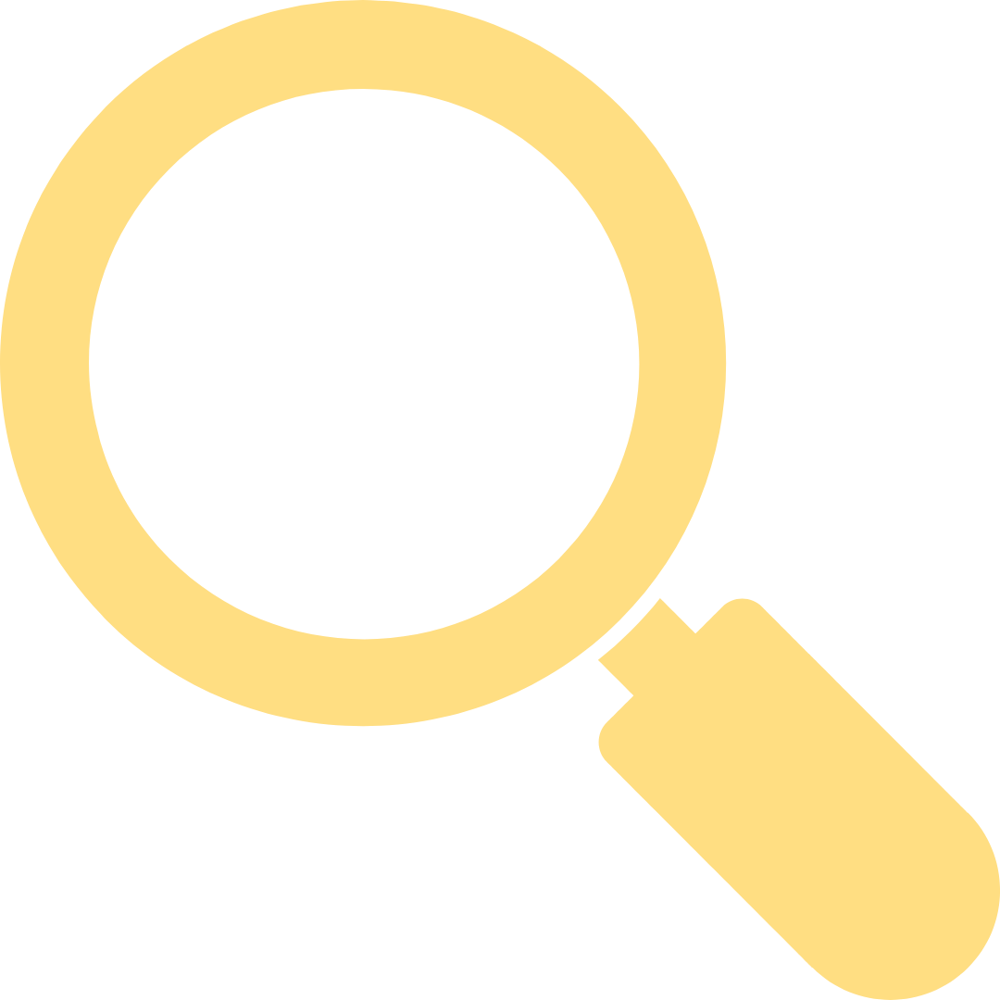
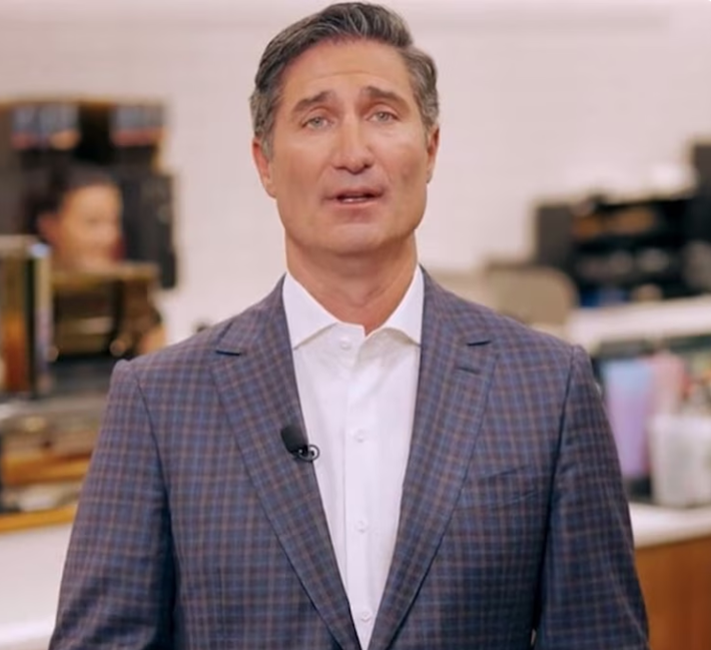
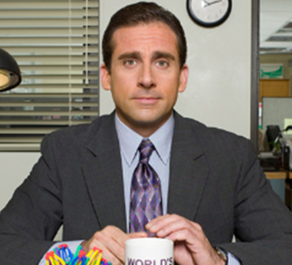
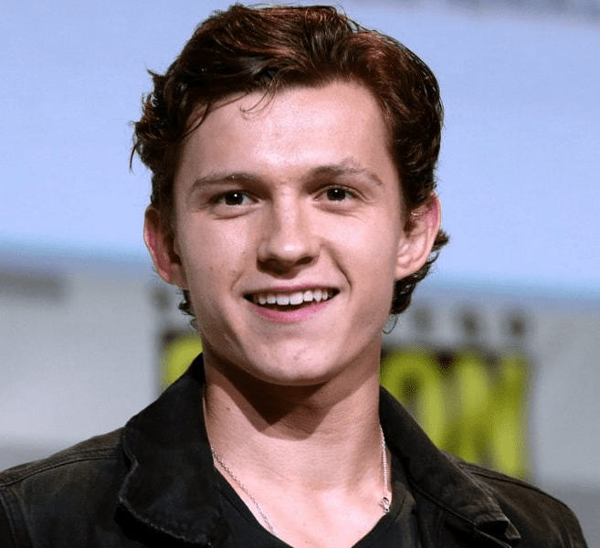
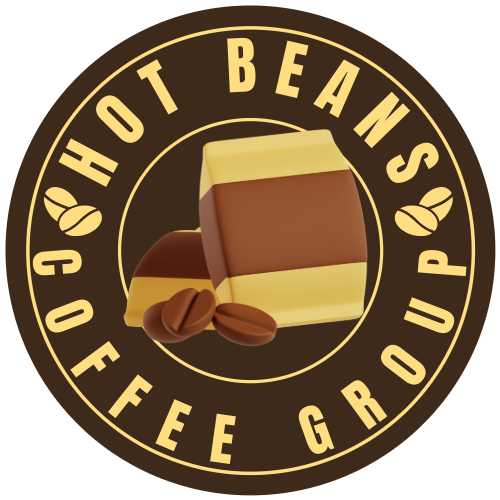
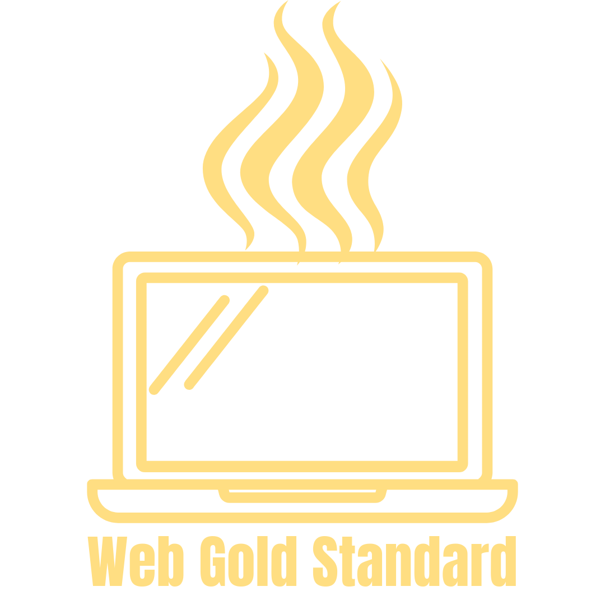

<link href="css.css" rel="stylesheet" type="text/css">
<link href='https://fonts.googleapis.com/css?family=Roboto' rel='stylesheet'>

<header>
  <h1></h1>
  <h1>Hot Beans Web Development</h1>
  <nav>
    <a href=Home.html>Home</a>
    <a href=Meet-The-Team.html> Meet The Team</a>
    <a href=Vacancies.html>Vacancies</a>
    <a href=Apply.html> Apply</a>
    <a href=Courses.html> Courses</a>
  </nav>
</header>
<main>
</br>
<center>
<font color="#3D2A1B"> 
<h1>The Executive Team</h1>
</center>
</font>
</br>
<div class="row">
  <div class="column">
    <div class="card">
      
      <div class="container">
        <h2><b>Carl Ardinal</b></h2>
        <h2 class="title">CEO - Hot Beans Group</h2>
        <p style="color:#3D2A1B;">Originally joining Hot Beans Coffee as an apprentice, Carl worked hard to progress through the company and helped to found and became the COO of Hot Beans Coffee Web Development. Upon the Retirement of our founder, Kaldi, he took up the position of CEO - Hot Beans Group. 
</br>
Sets the Strategic Vision of the Group.</p>
</br>
      </div>
    </div>
  </div>

<div class="row">
  <div class="column">
    <div class="card">
      
      <div class="container">
        <h2><b>Carlos Jamerson</b></h2>
        <h2 class="title">COO - Hot Beans Web</h2>
        <p style="color:#3D2A1B;">Carlos started off his career as a web developer working for Microsoft. He then rose through the ranks at Microsoft reaching Lead Developer, Europe. Carlos then helped found Hot Beans Web and assumed the role of Lead Developer. Upon the promotion of Carl, Carlos took on the role of COO.
</br>
Responsible for the daily running of the company.</p>

      </div>
    </div>
  </div>
<div class="row">
  <div class="column">
    <div class="card">
      
      <div class="container">
        <h2><b>Carlotta Bean</b></h2>
        <h2 class="title">CTO - Hot Beans Web</h2>
        <p style="color:#3D2A1B;">Originally, a founder of the most popular video streaming site. Carlotta was the CEO of that company for 9 years until she took a small career break and then has recently took the role as CTO after he company expansion into the North American market. 

</br>
Responsible for all technical and developmental related maters.</p>


      </div>
    </div>
  </div>

<div class="row">
  <div class="column">
    <div class="card">
      
      <div class="container">
        <h2><b>Carl Scott Jr</b></h2>
        <h2 class="title">Lead Developer - North America</h2>
        <p style="color:#3D2A1B;">Carl was originally a manager for a well known paper company. Upon a relocation to Colorado, he joined a small web development company as a Junior Web Developer. He joined Hot Beans Web as a Senior Developer and then got promoted Lead Developer shortly after that. 

</br>
Responsible for all Developement offices in North America.</p>
      </div>
    </div>
  </div>

<div class="row">
  <div class="column">
    <div class="card">
      
      <div class="container">
        <h2><b>Karl Smith</b></h2>
        <h2 class="title">Lead Developer - Europe</h2>
        <p style="color:#3D2A1B;">After spending his early adult life on the big screen, Karl decided to explore his other passions which led to him joining Hot Beans Web as an Apprentice Web Developer and has worked his way up to being Lead Developer - Europe. 
</br>Responsible for all Developement offices in Europe.  </p>

      </div>
    </div>
  </div>

</div>
</main>
<footer>Website made by Daniel Weedall
<h1>


</h1>
</footer>